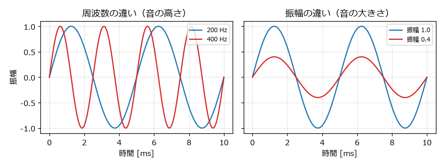
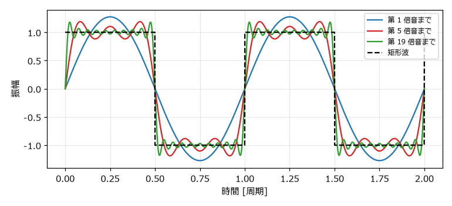
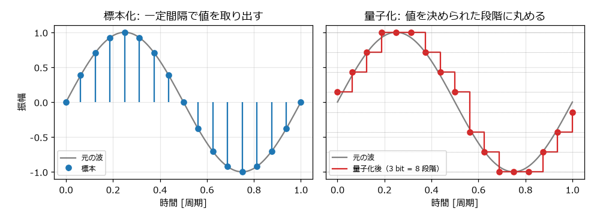
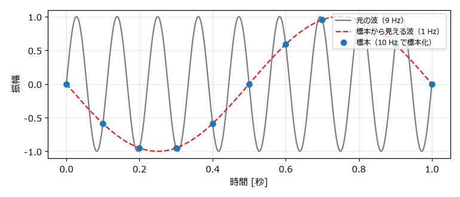

3. 音とデジタル音声の基礎
この章では、音とは何か、そしてコンピュータが音をどのように数値として扱うのかを説明する。ここで学ぶ周波数、振幅、倍音、標本化、量子化は、以降のすべての章の土台になる。
3.1. 音は空気の振動である
音の正体は空気の圧力の細かな変化（振動）である。スピーカーの振動板が前後に動くと、周囲の空気が押し縮められたり引き伸ばされたりして、その変化が波として耳まで伝わる。この波を音波という。
音波は、横軸を時間、縦軸を圧力の変化としたグラフで表せる。最も基本的な波形は次の式で表される正弦波である。
ここで \(t\) は時刻 [秒]、\(A\) は振幅、\(f\) は周波数 [Hz] である。
3.1.1. 周波数と音の高さ
周波数は 1 秒間に波が繰り返す回数であり、単位はヘルツ（Hz）である。周波数が高いほど音は高く聞こえる。1 回の繰り返しにかかる時間を周期といい、周期 \(T\) と周波数 \(f\) には次の関係がある。
例えば、時報の「ピッ、ピッ、ピッ」の音は 440 Hz であり、その周期は約 2.27 ミリ秒である。人間が聞き取れる周波数の範囲は、おおむね 20 Hz から 20000 Hz とされている。
3.1.2. 振幅と音の大きさ
振幅は波の揺れ幅であり、振幅が大きいほど音は大きく聞こえる。図 3.1 に、周波数と振幅の違いを示す。


図 3.1 周波数と振幅の違い
音の大きさはデシベル（dB）で表すことが多い。基準の振幅 \(A_0\) に対する振幅 \(A\) の大きさは、次の式で求められる。
振幅が 2 倍になると約 +6 dB、半分になると約 -6 dB になる。人間の耳は音の大きさを比で感じ取るため、対数で表すデシベルが感覚に合っている。音声ファイルでは、表現できる最大の振幅を 0 dB とし、それより小さい音を負の値で表す。この表し方を dBFS（decibels relative to full scale）という。
3.2. 倍音と音色
同じ高さ、同じ大きさの音でも、ピアノとトランペットでは聞こえ方が違う。この違いを音色という。音色の違いは波形の違いから生まれる。
周期的な波形は、どのような形であっても、周波数が \(f, 2f, 3f, \ldots\) の正弦波の足し合わせとして表せる（フーリエ級数）。最も低い周波数 \(f\) の成分を基音、その整数倍の周波数の成分を倍音という。音の高さは基音の周波数で決まり、音色はどの倍音がどれだけ含まれているかで決まる。
例えば、デューティ比（「音源チップの仕組み」で説明する）が 50 % の矩形波は奇数倍の倍音だけを含み、\(n\) 倍音の振幅は基音の \(1/n\) になる。
図 3.2 は、奇数倍音を順に足していくと矩形波に近づく様子を示している。


図 3.2 奇数倍音を足していくと矩形波に近づく
倍音を多く含む音ほど、明るく鋭い音に聞こえる。倍音を含まない正弦波は丸く澄んだ音で、倍音を多く含む矩形波は硬くはっきりした音である。次の 2 つの音は、どちらも 440 Hz（A4）である。
正弦波（440 Hz）
矩形波（440 Hz）
同じ振幅でも、矩形波のほうが大きく聞こえる。矩形波は常に最大の振幅にあり、さらに耳が敏感な高い周波数の倍音を多く含むからである。8 bit サウンドの波形は、どれも倍音を多く含んでいる。
3.3. デジタル音声
コンピュータは連続的に変化する音波をそのままは扱えない。そこで、音波を一定の時間間隔で区切り、各時点の値を整数で記録する。この方式を PCM（Pulse Code Modulation）という。PCM は 2 つの手順からなる。
3.3.1. 標本化（サンプリング）
一定の時間間隔で波形の値を取り出すことを標本化（サンプリング）という。取り出した 1 つ 1 つの値をサンプル（標本）、1 秒あたりのサンプル数をサンプリング周波数という。サンプリング周波数を \(f_s\) とすると、\(n\) 番目のサンプルの時刻は次のとおりである。
代表的なサンプリング周波数は、音楽 CD の 44100 Hz と、動画やゲームで多く使われる 48000 Hz である。本書のサンプルコードは 44100 Hz を使う。
3.3.2. 量子化
取り出した値を、決められた段階の整数に丸めることを量子化という。段階の細かさを表すビット数を量子化ビット数といい、\(b\) bit なら \(2^b\) 段階で値を表す。音楽 CD や本書の WAV ファイルは 16 bit（65536 段階）である。
図 3.3 は、正弦波を標本化し、さらに 3 bit（8 段階）で量子化した例である。


図 3.3 標本化と量子化
量子化で丸めた分の誤差は、雑音（量子化雑音）として聞こえる。量子化ビット数が 1 bit 増えるごとに、信号と量子化雑音の比は約 6 dB 改善する。16 bit あれば、通常の用途で量子化雑音が問題になることはない。
3.3.3. データの大きさ
PCM の音声データの大きさは、次の式で求められる。
44100 Hz、16 bit、モノラル（1 チャンネル）の場合、1 秒あたり \(44100 \times 2 \times 1 = 88200\) バイト、つまり約 88 KB になる。「8 bit サウンドとは」で述べたように、8 bit 機の時代にはこの量のデータを扱うのは難しかった。
3.4. ナイキスト周波数とエイリアシング
標本化には限界がある。サンプリング周波数 \(f_s\) で標本化した音声は、\(f_s / 2\) までの周波数しか正しく表せない。この上限をナイキスト周波数という。44100 Hz で標本化した場合、ナイキスト周波数は 22050 Hz であり、人間が聞き取れる範囲を十分にカバーしている。
ナイキスト周波数を超える成分を標本化すると、その成分は実際より低い別の周波数として現れる。この現象をエイリアシングという。周波数 \(f\) の成分は、標本化後には次の周波数 \(f'\) に化ける。
図 3.4 は、9 Hz の波を 10 Hz で標本化した例である。標本だけを見ると、1 Hz の波と区別できない。


図 3.4 エイリアシング（9 Hz の波を 10 Hz で標本化した場合）
エイリアシングは 8 bit サウンドを作るときにも関係する。矩形波は無限に高い倍音まで含むため、プログラムで単純に矩形波を作ると、ナイキスト周波数を超えた倍音がエイリアシングを起こす。この影響は「Python で波形を作る」で確認する。
3.5. WAV ファイル
PCM の音声データを保存する代表的なファイル形式が WAV である。WAV ファイルは、ヘッダー部分にサンプリング周波数や量子化ビット数などの情報を持ち、その後ろにサンプルの値をそのまま並べた構造になっている。データを圧縮しないため、ファイルは大きいが、読み書きが簡単で音質が劣化しない。
部分 |
大きさ |
内容 |
|---|---|---|
RIFF ヘッダー |
12 バイト |
ファイルの種類（RIFF 形式の WAVE であること）と全体の大きさ |
fmt チャンク |
24 バイト |
形式（PCM）、チャンネル数、サンプリング周波数、量子化ビット数など |
data チャンク |
8 バイト + データ |
サンプルの値。16 bit の場合は符号付き整数（-32768 から 32767）をリトルエンディアンで並べる |
Python では、標準ライブラリの wave モジュールを使うと、ヘッダーを意識せずに WAV ファイルを読み書きできる。本書のサンプルコードでは、-1.0 から 1.0 の浮動小数点数で音を作り、最後に 16 bit の整数に変換して書き出す。この処理は「Python で波形を作る」で説明する。